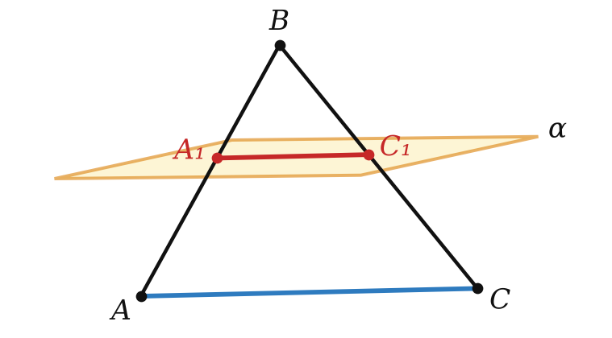

Теория
Три случая для прямой и плоскости
Прямая и плоскость могут располагаться тремя способами:
- прямая лежит в плоскости — все её точки принадлежат плоскости;
- прямая пересекает плоскость — ровно одна общая точка;
- прямая и плоскость не имеют общих точек.
Других вариантов нет: две общие точки уже «затягивают» прямую в плоскость (аксиома А4).
Прямую и плоскость называют параллельными, если они не имеют общих точек. Обозначение: a ∥ α.

Примеры: перекладина турника и пол, водосточная труба и стена дома, верхнее ребро A₁B₁ куба и плоскость нижней грани. Отрезок называют параллельным плоскости, если он лежит на прямой, параллельной этой плоскости.
Признак параллельности прямой и плоскости
Проверить по определению, что у прямой и плоскости нет ни одной общей точки, трудно — плоскость бесконечна. Поэтому нужен признак.
Если прямая, не принадлежащая плоскости, параллельна какой-нибудь прямой, лежащей в этой плоскости, то она параллельна и самой плоскости.

Пусть a ⊄ α, b ⊂ α, a ∥ b. Допустим, a всё-таки пересекает α в точке M. Возможны два случая.
1) M ∈ b. Тогда у a и b есть общая точка — они пересекаются, а не параллельны.
2) M ∉ b. Тогда b лежит в α, а a пересекает α в точке вне b — по признаку 4.3 прямые скрещиваются, а не параллельны.
Оба случая противоречат условию. Значит, общих точек нет: a ∥ α. ∎
Пример: в кубе A₁B₁ ∥ AB (противоположные стороны квадрата ABB₁A₁), а AB лежит в плоскости ABC. Значит, A₁B₁ ∥ (ABC).
Не забывай условие «прямая не лежит в плоскости». Прямая AB параллельна DC, но плоскости ABC она не параллельна — она в ней лежит.
Как параллельность прямой и плоскости даёт параллельные прямые
Если плоскость проходит через данную прямую, параллельную другой плоскости, и пересекает эту плоскость, то прямая пересечения плоскостей параллельна данной прямой.

Пусть a ∥ α, a ⊂ β, β ∩ α = b. Прямые a и b лежат в одной плоскости β, значит, они либо пересекаются, либо параллельны. Если бы они пересекались, то общая точка лежала бы на b ⊂ α — прямая a имела бы общую точку с α. Но a ∥ α. Значит, a ∥ b. ∎
Это главный инструмент для сечений: если секущая плоскость проходит через прямую, параллельную грани, то она режет грань по прямой, параллельной этой прямой.
Если прямая параллельна плоскости, то в этой плоскости есть прямая, параллельная данной.
Возьми любую точку M ∈ α и проведи плоскость через прямую a и M (теорема 2.1). Она пересекает α по прямой через M, и по теореме 5.2 эта прямая параллельна a.
Если через каждую из двух параллельных прямых проведена плоскость, причём эти плоскости пересекаются по прямой, отличной от данных, то эта прямая параллельна каждой из данных прямых.
Пусть a ∥ b, a ⊂ α, b ⊂ β, α ∩ β = c. Прямая a не лежит в β (иначе она совпала бы с c) и параллельна прямой b из β, поэтому a ∥ β (признак 5.1). Плоскость α проходит через a и пересекает β по c — по теореме 5.2 a ∥ c. Так же b ∥ c. ∎
Две прямые, параллельные третьей прямой, параллельны между собой.
Пусть a ∥ c и b ∥ c. Если все три прямые в одной плоскости — это планиметрия. Иначе возьмём точку M ∈ a, проведём плоскость α через b и M, плоскость β через c и M. Они пересекаются по прямой a₁ через M. По теореме 5.3 (для параллельных b и c) a₁ ∥ b и a₁ ∥ c. Через M проходят a ∥ c и a₁ ∥ c — по теореме 4.2 это одна прямая. Значит, a ∥ b. ∎
В планиметрии это было очевидно, а в пространстве потребовало доказательства. Зато теперь можно смело говорить: «AB ∥ MN и MN ∥ KP, значит, AB ∥ KP» — даже если прямые лежат в разных гранях.
Если прямая параллельна каждой из двух пересекающихся плоскостей, то она параллельна прямой их пересечения.
Разбор примеров
Плоскостям каких граней куба ABCDA₁B₁C₁D₁ параллельна прямая A₁B₁?
Прямая A₁B₁ лежит в гранях AA₁B₁B и A₁B₁C₁D₁ и пересекает плоскости граней AA₁D₁D и BB₁C₁C (в точках A₁ и B₁). Остаются две грани: ABCD (A₁B₁ ∥ AB) и DD₁C₁C (A₁B₁ ∥ D₁C₁). По признаку 5.1 — 2 грани.

Плоскость α, параллельная стороне AC треугольника ABC, пересекает стороны AB и BC в точках A₁ и C₁. BA₁ : BA = 2 : 5, AC = 15. Найдите A₁C₁.
Плоскость треугольника проходит через прямую AC, параллельную α, и пересекает α по прямой A₁C₁. По теореме 5.2 A₁C₁ ∥ AC.
Дальше планиметрия: △A₁BC₁ ∼ △ABC, A₁C₁ = 15 · 2/5 = 6.

Все рёбра тетраэдра DABC равны 8. Постройте сечение плоскостью, проходящей через середину M ребра DA параллельно прямым AB и DC, и найдите его периметр.
1) Секущая плоскость параллельна AB и пересекает грань DAB по прямой через M, параллельной AB (теорема 5.2). Это средняя линия: она приходит в середину N ребра DB.
2) Так же в грани DAC: через M прямая ∥ DC — средняя линия MP, P — середина AC. В грани DBC: через N прямая ∥ DC приходит в середину Q ребра BC.
3) Сечение — MNQP. Все его стороны — средние линии: MN = PQ = AB/2 = 4, MP = NQ = DC/2 = 4 (и MN ∥ PQ по теореме 5.4 — это параллелограмм). Периметр 16.
Секущую плоскость, «параллельную прямой», нельзя строить «на глаз». Всегда ищи грань, через которую проходит эта прямая (или параллельную ей), и проводи в ней параллельную прямую — это и есть след по теореме 5.2.
Задачи урока
Реши в тетради, к каждой задаче — чертёж. Разберём на занятии.
Тест к уроку
Домашнее задание
Задачи Д1–Д6 ниже, к каждой — рисунок. Из учебника: № 5.2, 5.9, 5.13, 5.20. Выучить признак 5.1 и теорему 5.2 с доказательствами; формулировки теорем 5.3, 5.4.